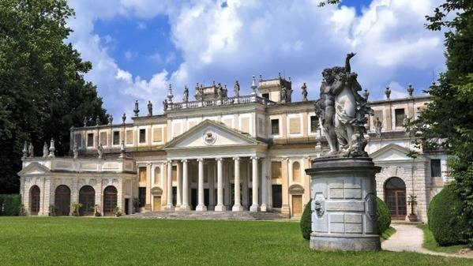
Historically the "orchard" and summer retreat for Venetian nobility, our landscape is defined by the UNESCO World Heritage Prosecco Hills and the elegant Palladian-style villas that line our countryside.
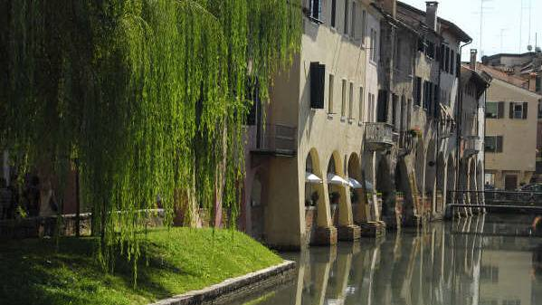
We are a "città d'acqua," where the Sile River creates a natural mirror for our medieval walls and Renaissance frescoes. Walking through Treviso is like moving through an open-air gallery of "painted stories" on every facade.
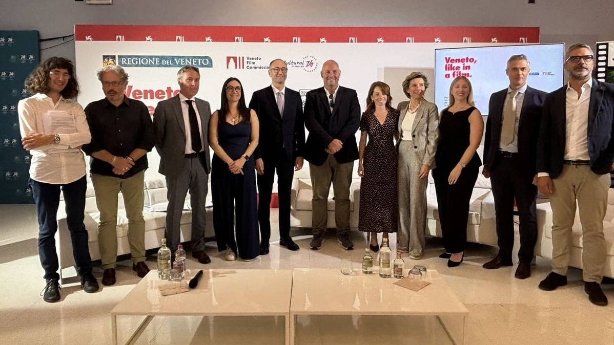
Beyond our beauty, we are a powerhouse of Business Intelligence and Creativity. We are the home of world-class craftsmanship, from high-end fashion and cycling technology to the technical expertise of the Treviso Film Commission.
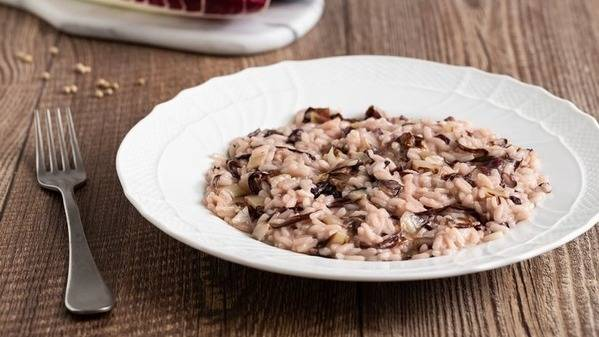
We represent the authentic Italian lifestyle. Whether it is the crunch of our world-famous Radicchio Rosso or the global legacy of Tiramisù, we believe that every meeting should begin with a glass of local wine and a warm welcome.
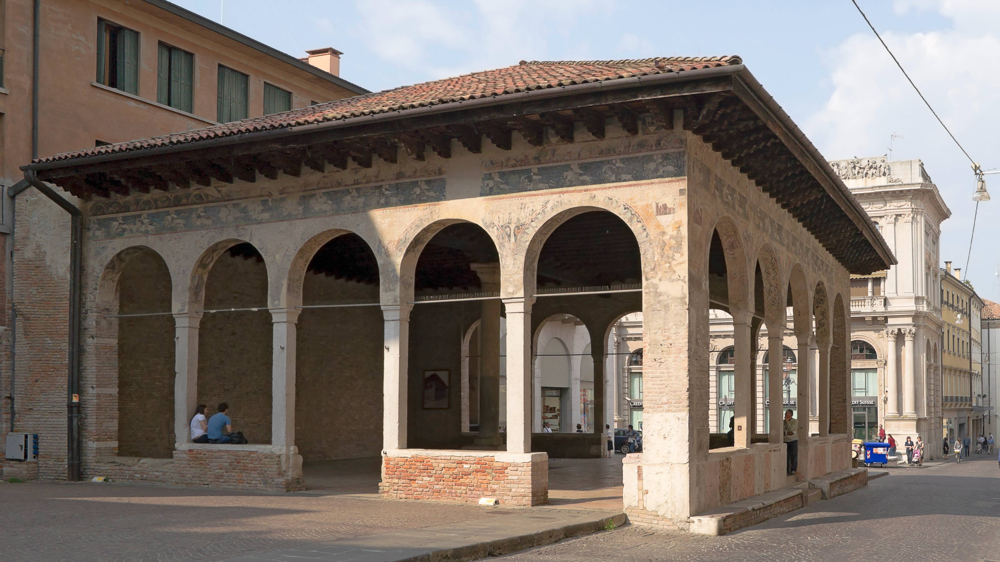
Explore the historic center to admire the unique medieval and Renaissance frescoes that decorate the building facades, especially around Piazza dei Signori and the Loggia dei Cavalieri.
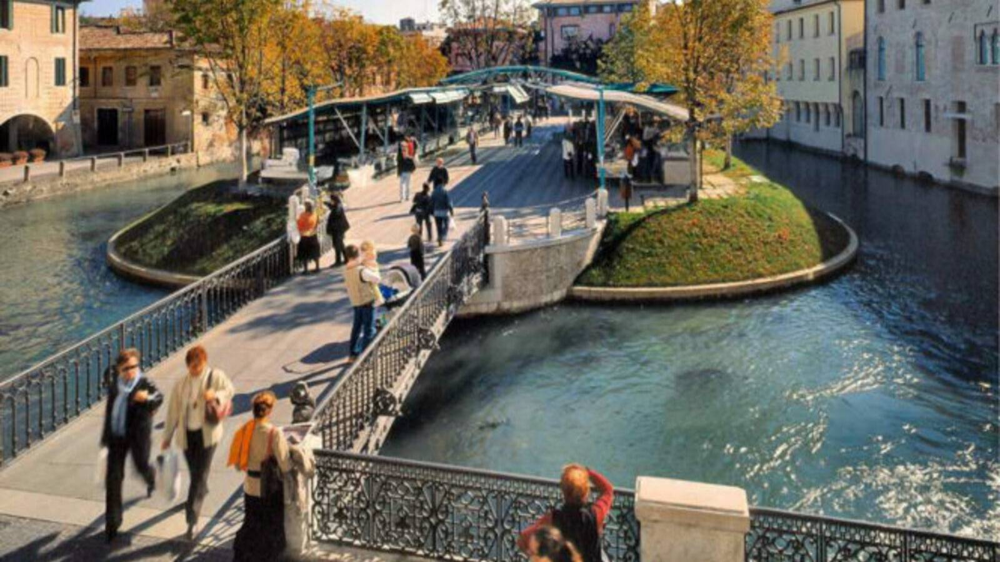
Stroll along the scenic Buranelli canal and visit the Isola della Pescheria, a small river island that has hosted the city’s historic fish market for centuries.
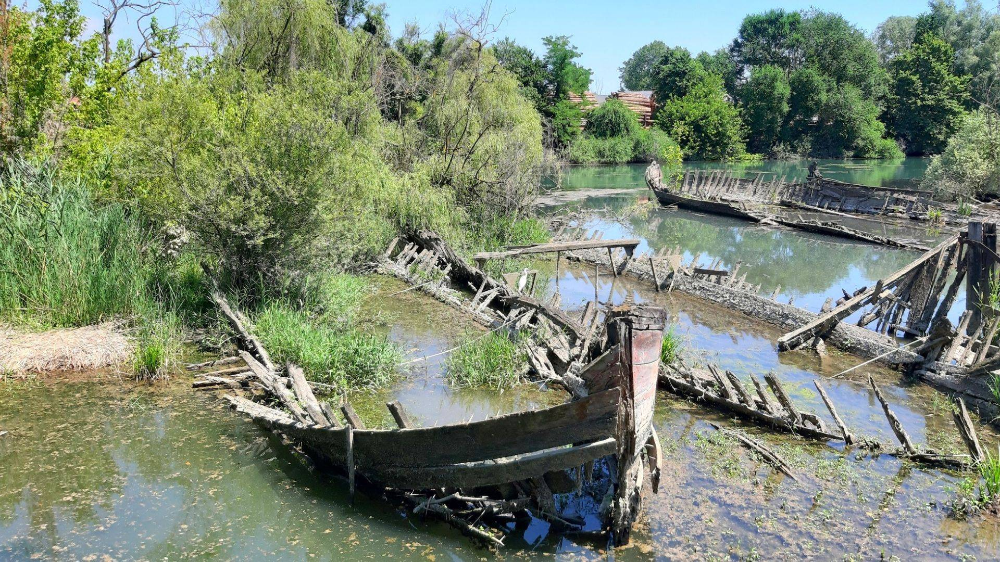
Walk or cycle the nature path following the Sile River. This peaceful route leads to the "Burci Cemetery," where ancient wooden cargo boats are submerged in the water.
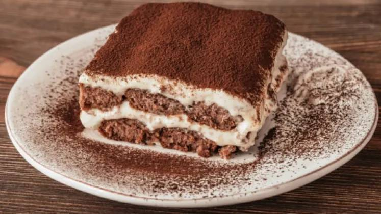
Visit the local restaurants and pastry shops in the city center to taste the world-famous dessert in its authentic birthplace, often paired with a glass of local Prosecco.
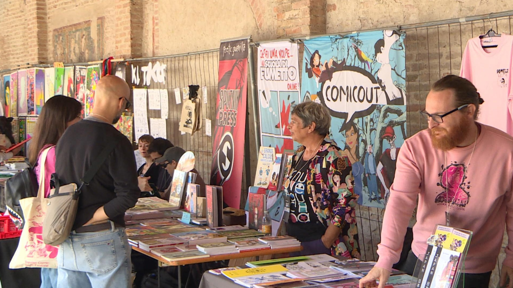
This event transforms the city's shop windows into canvases for international illustrators. The historic center becomes an open-air gallery dedicated to contemporary comics and illustration, with exhibitions in ancient palaces and creative workshops.
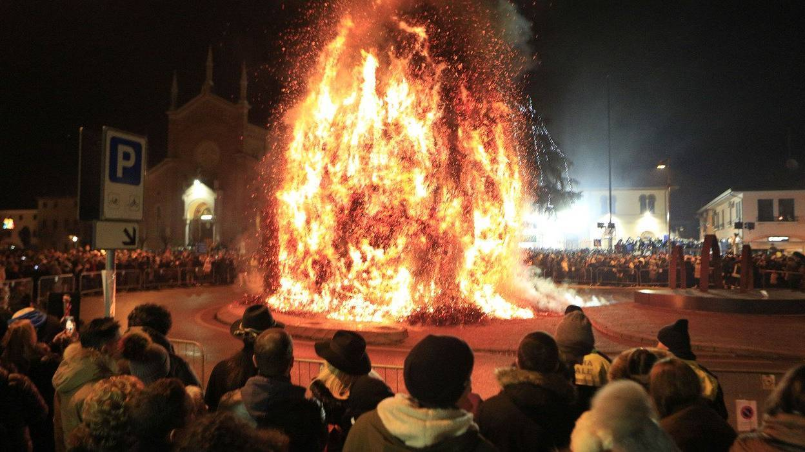
Il periodo invernale è segnato dai tradizionali falò chiamati "Panevin", accesi nelle campagne circostanti, e da concerti di musica sacra e corale nelle antiche chiese cittadine, che preservano il folklore locale e il senso di comunità.
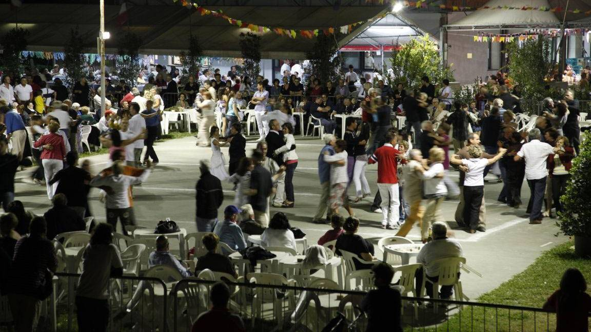
Throughout the year, the surrounding villages celebrate their heritage with "Sagre." These community festivals feature long tables in town squares where you can enjoy authentic local recipes, traditional music, and a festive atmosphere that captures the true heart of the region.
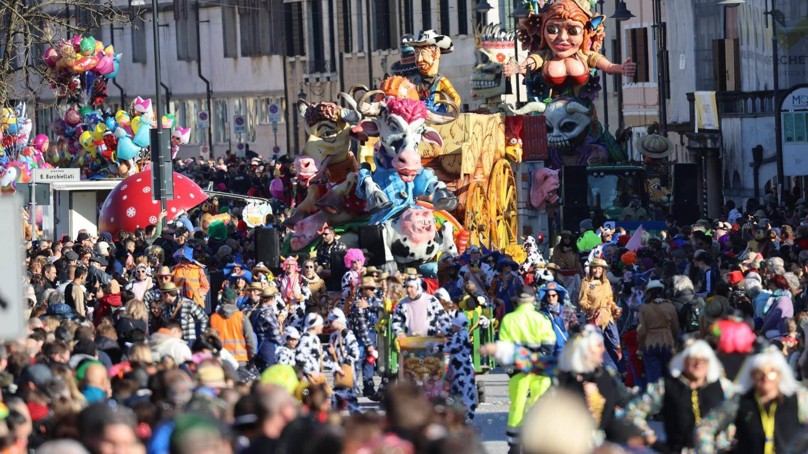
During the Carnival season, the city streets are taken over by massive, colorful allegorical floats and choreographed groups. It is a spectacular family-friendly celebration featuring traditional Venetian masks and festive parades through the main squares.
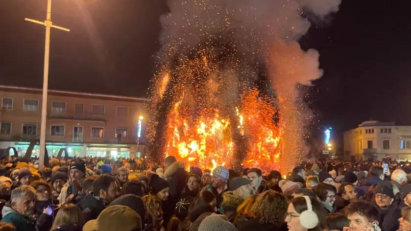
Traditional bonfires to "predict" the harvest (Jan 5) and allegorical float parades ending with the symbolic burning of the "Burlo."
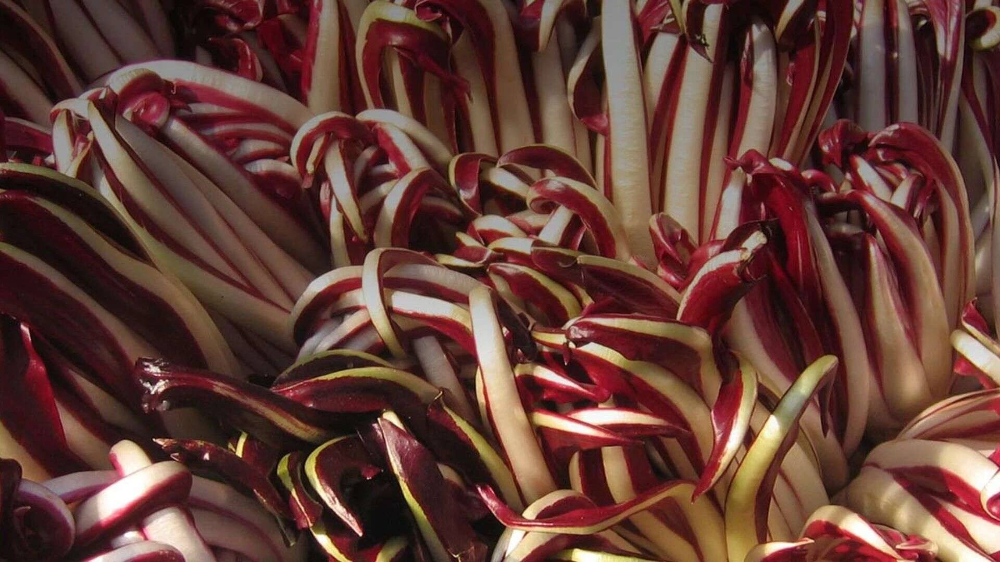
Peak season for Radicchio Rosso di Treviso IGP with dedicated tasting menus and local fairs.
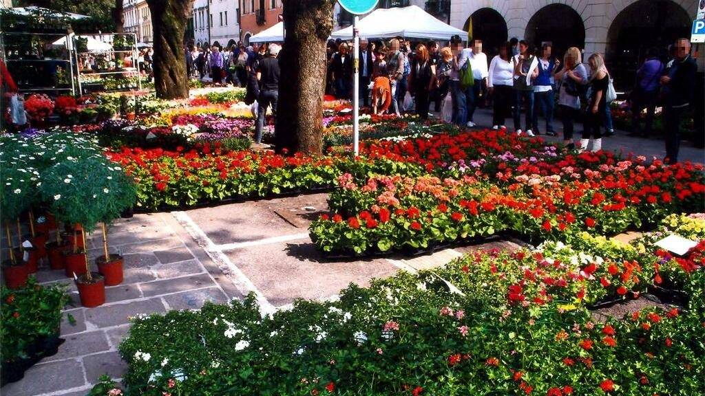
The city becomes a botanical garden during Treviso in Fiore, complemented by major international art exhibitions at Ca’ dei Carraresi.
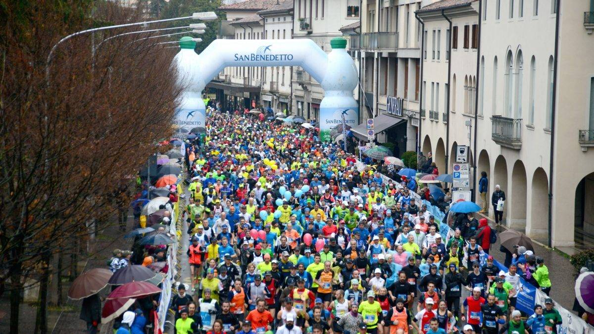
A massive sporting event connecting the surrounding hills to the city center.
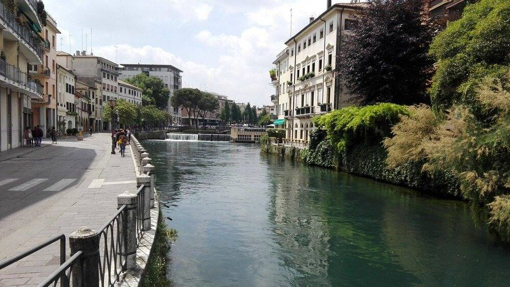
Fireworks over the Sile River (June) and Suoni di Marca, a major free festival featuring live music and local food on the city walls.
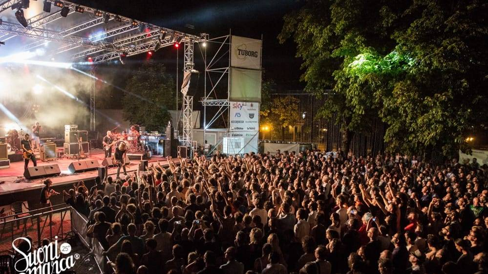
Classical concerts and opera performances held in historic squares like Piazza dei Signori.
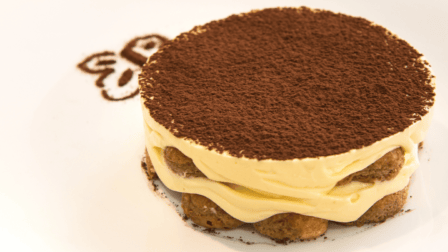
The Comic Book Festival decorates the city in September, followed by the Tiramisù World Cup and Prosecco harvest festivals in the hills.
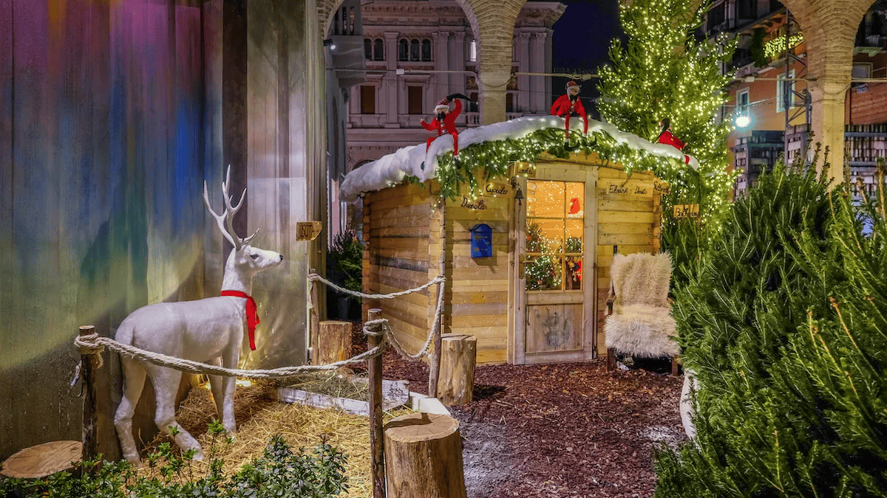
December features floating nativity scenes, Christmas markets, and elegant light displays.